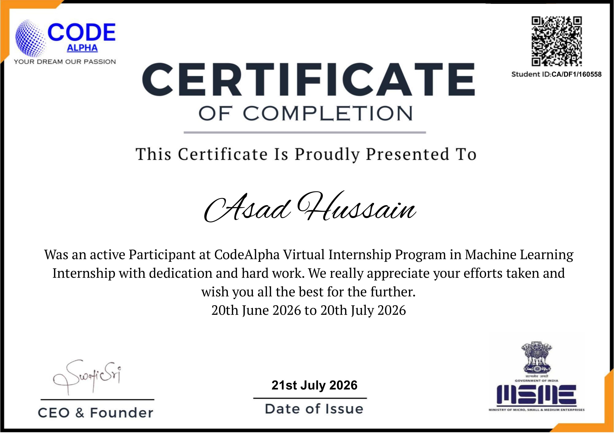
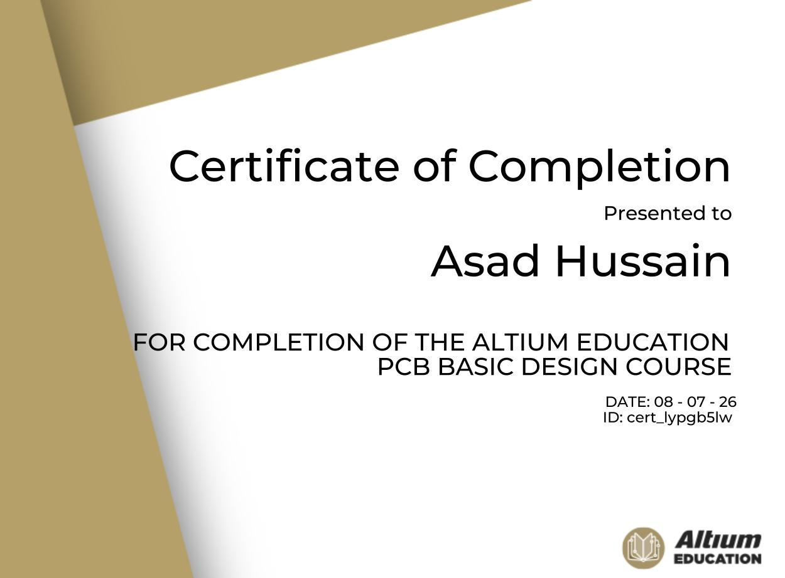
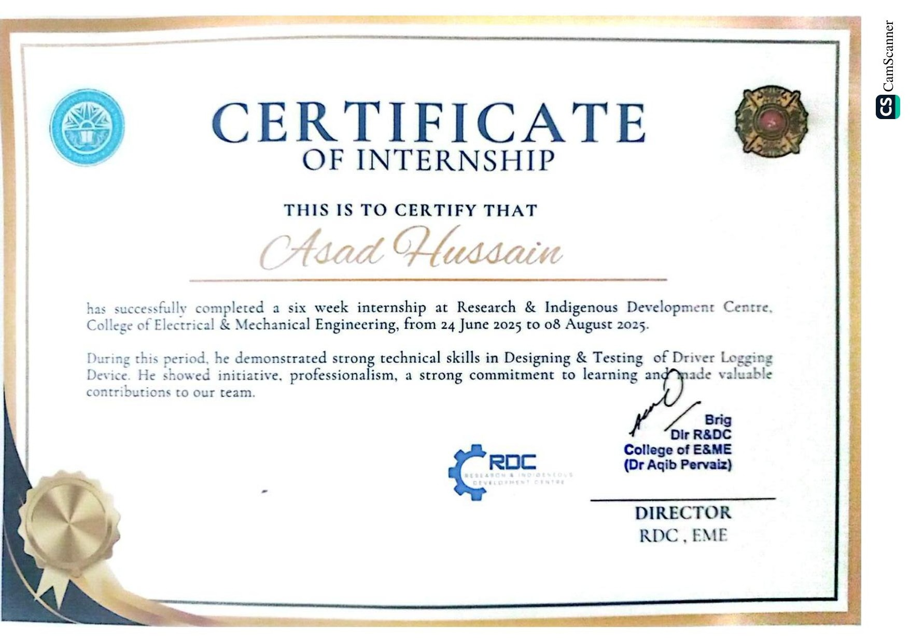

Electrical Engineering student at NUST focused on building practical solutions at the intersection of embedded systems, intelligent computing, and RF technology. I turn complex problems into working, real world systems.
Electrical engineering student building systems from hardware up.
I am a final year Electrical Engineering student at NUST working across two tracks, applied machine learning and embedded or RF systems engineering. On the machine learning side, I am currently building content scoring pipelines as a Machine Learning Intern at FlyRank AI, and I trained in deep learning, natural language processing, large language models, and retrieval augmented generation through AtomCamp's AI Bootcamp. On the hardware side, my experience spans ESP32 based IoT systems, real time telemetry, MQTT communication, and Flask backend development, built during an engineering internship at the Research and Indigenous Development Centre, where I helped deliver a live IoT fleet management system.
My final year project, DroneGuard, is an anti drone surveillance system built as two circuit boards, an RF detection front end and a jamming board, together covering four frequency bands with a low noise amplifier that extends detection range from around thirty meters to over one hundred and fifty meters. A Raspberry Pi running GNU Radio classifies drone control signals from live RF samples in real time, and a MATLAB front end visualizes the spectrum and telemetry alongside YOLOv8 based visual confirmation. I am comfortable moving between training models and designing the circuits and firmware that feed them real world data.
Projects Completed
Internships & Certs
Years of Study
My professional journey and hands-on training.
Technologies and tools I work with daily.
Real-world projects that showcase my skills and creativity.
A two board anti drone system built for my final year project. An RF detection front end covers four bands using CC1101, Si4432, and NRF24L01 with PA and LNA transceivers, paired with a jamming board built around an ADF4351 PLL synthesizer. A Raspberry Pi 4 with an RTL SDR and GNU Radio classifies FHSS, OFDM, and FSK drone protocols in real time, while a MATLAB front end shows live spectrum, spectrogram, and GPS data with YOLOv8 based visual confirmation.
Professional certifications and achievements.



Asad exhibited excellent performance during his internship and made a valuable contribution to our organization. He has excellent analytical skills, quickly acquired new skills, and adeptly adapted to emerging technologies. His dedication and skills make him a valuable asset to any prospective employer.
Let's build something amazing together.
I'm currently open to internship opportunities, freelance projects, and collaborations. Whether you have a question or just want to say hi, I'll try my best to get back to you!
asadh1521@gmail.com
+92 320 4141092
NUST, Islamabad · Based in Lahore, Pakistan
Open for Opportunities